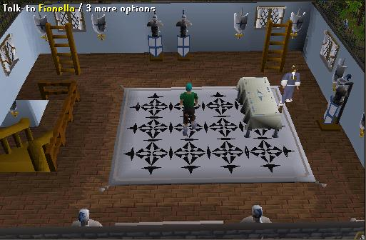
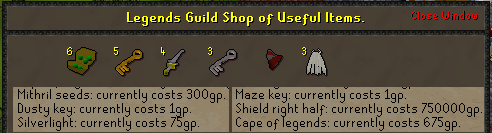
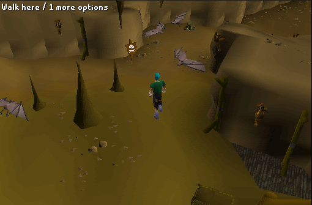

Legends Guild
Welcome to the Legends Guild! Getting in means that you have gotten 107 quest points worth of quests including the Hero's, Family Crest, Waterfall, Shilo Village, and Underground Pass Quests. It also requires some pretty high stats and a high combat level.The Legends Guild is situated North-East of Ardougne and can be found by just following the path east out of Ardougne - simple! Upon arrival you'll see the guild is heavily guarded by 2 guards. Walking down the nice pathway gives you a great feeling inside. Besides that the guild looks amazing (you'll see in upcoming pics) but because the quest you had to go through is finally over. No more getting torn up!

Enter through the front doors and you'll see Sir Radimus Erkle and the totem pole being displayed in the center.

As you can see there are 2 sets of stairs. We'll go up the east ones first.
On the first floor is Fionella, the runner of the General Store. There are also two ladders on the East and West side of the room.

She sells the following items for the following prices.

Up the East ladder is a bank with 4 bankers standing there just waiting for your service. Amazing view down also!

Go up the West ladder, you can get another great view here also, but better than that you can see Siegfried Erkle and view the items he has for sale.

This is what he sells and what prices they're available for.

Go back down to the ground floor and go down the other flight of stairs. This will bring you to the Underground part of the guild. When you first come down you will notice some Giant Bats.

Venture on and you come to an area with heaps of little Pit Scorpians. Watch your step...

Move on even further and around the fence will bring you to the part every member likes, the Shadow Warriors. I've counted 11 but there may be more. Pretty insane combat xp if there's only 3-5 people. Ignore the 0 I hit, I'm not as good a fighter as you guys are.

That is the end of the Legend's Guild, I hope everyone enjoys it.
This Guild guide was written by Psycotic. Thanks to halonoob and Imperial G96 for corrections.
This Guild guide was entered into the database on Sat, Apr 10, 2004, at 12:55:01 AM by stormer and was last updated on Mon, Aug 29, 2005, at 08:56:46 PM by DRAVAN.